Code
import tensorflow as tf
import pandas as pd
import numpy as np
import matplotlib.pyplot as plt
plt.rcParams['figure.figsize'] = (8, 8)
tf.__version__'2.12.0'kakamana
April 1, 2023
As you learned in the previous chapters, TensorFlow 2 was used to build models. With the help of those same tools, you will build, train, and make predictions using neural networks in this chapter. The purpose of this course is to teach you how to define dense layers, apply activation functions, select an optimizer, and apply regularization to reduce overfitting. In order to define and train models, you will utilize both low-level linear algebra and high-level Keras API operations provided by TensorFlow.
This Neural Networks is part of Datacamp course: Introduction to TensorFlow in Python Until recently, cutting-edge computer vision algorithms could not distinguish between images of cats and dogs. Today, a skilled data scientist equipped with a laptop can classify tens of thousands of objects more accurately than a human eye. This course uses TensorFlow 2.6 to develop, train, and predict models that have fueled major advances in recommendation systems, image classification, and financial technology. In this course, you will learn both high-level APIs that will allow you to design and train deep learning models in 15 lines of code, as well as low-level APIs that will allow you to go beyond off-the-shelf procedures. Additionally, you will learn how to accurately predict housing prices, credit card defaults, and images of sign language gestures.
This is my learning experience of data science through DataCamp. These repository contributions are part of my learning journey through my graduate program masters of applied data sciences (MADS) at University Of Michigan, DeepLearning.AI, Coursera & DataCamp. You can find my similar articles & more stories at my medium & LinkedIn profile. I am available at kaggle & github blogs & github repos. Thank you for your motivation, support & valuable feedback.
These include projects, coursework & notebook which I learned through my data science journey. They are created for reproducible & future reference purpose only. All source code, slides or screenshot are intellactual property of respective content authors. If you find these contents beneficial, kindly consider learning subscription from DeepLearning.AI Subscription, Coursera, DataCamp
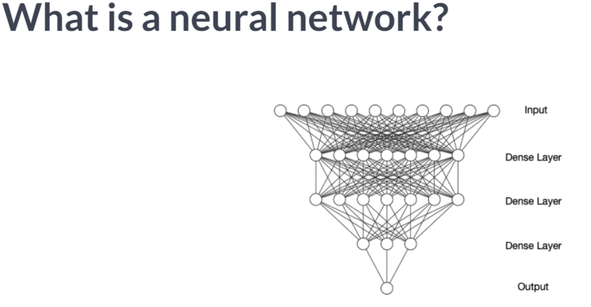
A dense layer applies weights to all nodes from the previous layer.
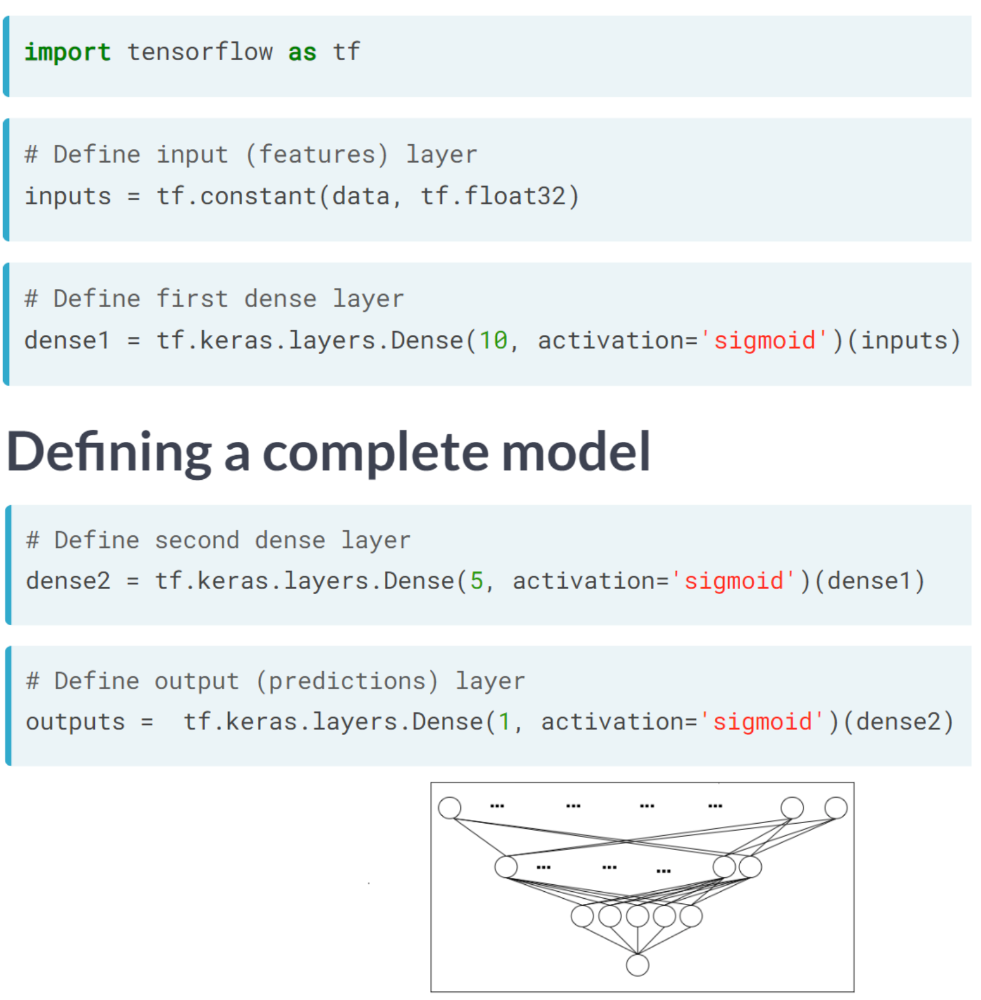
There are two ways to define a dense layer in tensorflow. The first involves the use of low-level, linear algebraic operations. The second makes use of high-level keras operations.
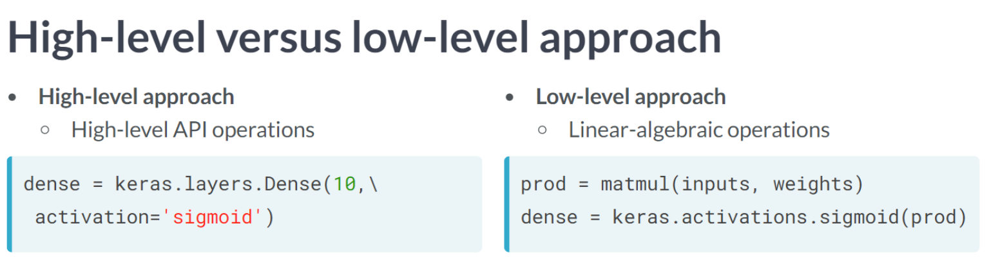
borrower_features = np.array([[2., 2., 43.]], np.float32)
# Initialize bias1
bias1 = tf.Variable(1.0)
# Initialize weights1 as 3x2 variable of ones
weights1 = tf.Variable(tf.ones((3,2)))
# Perform matrix multiplication of borrower_features and weights1
product1 = tf.matmul(borrower_features,weights1)
# Apply sigmoid activation function to product1 + bias1
dense1 = tf.keras.activations.sigmoid(product1 + bias1)
# Print shape of dense1
print("\n dense1's output shape: {}".format(dense1.shape))
dense1's output shape: (1, 2)# From previous step
bias1 = tf.Variable(1.0)
weights1 = tf.Variable(tf.ones((3, 2)))
product1 = tf.matmul(borrower_features, weights1)
dense1 = tf.keras.activations.sigmoid(product1 + bias1)
# Initialize bias2 and weights2
bias2 = tf.Variable(1.0)
weights2 = tf.Variable(tf.ones((2, 1)))
# Perform matrix multiplication of dense1 and weights2
product2 = tf.matmul(dense1,weights2)
# Apply activation to product2 + bias2 and print the prediction
prediction = tf.keras.activations.sigmoid(product2 + bias2)
print('\n prediction: {}'.format(prediction.numpy()[0,0]))
print('\n actual: 1')
print("\nOur model produces predicted values in the interval between 0 and 1. For the example we considered, the actual value was 1 and the predicted value was a probability between 0 and 1. This, of course, is not meaningful, since we have not yet trained our model's parameters.")
prediction: 0.9525741338729858
actual: 1
Our model produces predicted values in the interval between 0 and 1. For the example we considered, the actual value was 1 and the predicted value was a probability between 0 and 1. This, of course, is not meaningful, since we have not yet trained our model's parameters.As we construct the first dense hidden layer for the case where we have multiple examples, we will gain further insight into the low-level approach. We will assume that the model has been trained and that the first layer weights, weights1, and bias, bias1, are available. The borrower_features tensor will then be multiplied by the weights1 variable. Among the borrower_featurestensor’s components are education, marital status, and age. As a final step, we will apply the sigmoid function to the elements of products1 + bias1, resulting in dense1.
bias1 = tf.Variable([0.1], tf.float32)
# Compute the product of borrower_features and weights1
products1 = tf.matmul(borrower_features, weights1)
# Apply a sigmoid activation function to products1 + bias1
dense1 = tf.keras.activations.sigmoid(products1 + bias1)
# Print the shapes of borrower_features, weights1, bias1, and dense1
print('\n shape of borrower_features: ', borrower_features.shape)
print('\n shape of weights1: ', weights1.shape)
print('\n shape of bias1: ', bias1.shape)
print('\n shape of dense1: ', dense1.shape)
shape of borrower_features: (1, 3)
shape of weights1: (3, 2)
shape of bias1: (1,)
shape of dense1: (1, 2)We have now seen how to define dense layers in Tensorflow using linear algebra. We will skip the linear algebra in this exercise and let Keras handle the details. Using this method, we will be able to construct the network below, which has two hidden layers and ten features, with less code than the network with one hidden layer and three features.
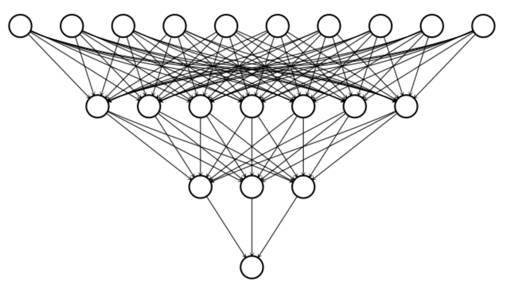
To construct this network, we’ll need to define three dense layers, each of which takes the previous layer as an input, multiplies it by weights, and applies an activation function.
| ID | LIMIT_BAL | SEX | EDUCATION | MARRIAGE | AGE | PAY_0 | PAY_2 | PAY_3 | PAY_4 | ... | BILL_AMT4 | BILL_AMT5 | BILL_AMT6 | PAY_AMT1 | PAY_AMT2 | PAY_AMT3 | PAY_AMT4 | PAY_AMT5 | PAY_AMT6 | default.payment.next.month | |
|---|---|---|---|---|---|---|---|---|---|---|---|---|---|---|---|---|---|---|---|---|---|
| 0 | 1 | 20000.0 | 2 | 2 | 1 | 24 | 2 | 2 | -1 | -1 | ... | 0.0 | 0.0 | 0.0 | 0.0 | 689.0 | 0.0 | 0.0 | 0.0 | 0.0 | 1 |
| 1 | 2 | 120000.0 | 2 | 2 | 2 | 26 | -1 | 2 | 0 | 0 | ... | 3272.0 | 3455.0 | 3261.0 | 0.0 | 1000.0 | 1000.0 | 1000.0 | 0.0 | 2000.0 | 1 |
| 2 | 3 | 90000.0 | 2 | 2 | 2 | 34 | 0 | 0 | 0 | 0 | ... | 14331.0 | 14948.0 | 15549.0 | 1518.0 | 1500.0 | 1000.0 | 1000.0 | 1000.0 | 5000.0 | 0 |
| 3 | 4 | 50000.0 | 2 | 2 | 1 | 37 | 0 | 0 | 0 | 0 | ... | 28314.0 | 28959.0 | 29547.0 | 2000.0 | 2019.0 | 1200.0 | 1100.0 | 1069.0 | 1000.0 | 0 |
| 4 | 5 | 50000.0 | 1 | 2 | 1 | 57 | -1 | 0 | -1 | 0 | ... | 20940.0 | 19146.0 | 19131.0 | 2000.0 | 36681.0 | 10000.0 | 9000.0 | 689.0 | 679.0 | 0 |
5 rows × 25 columns
dense1 = tf.keras.layers.Dense(7, activation='sigmoid')(borrower_features)
# Define a dense layer with 3 output nodes
dense2 = tf.keras.layers.Dense(3, activation='sigmoid')(dense1)
# Define a dense layer with 1 output node
predictions = tf.keras.layers.Dense(1, activation='sigmoid')(dense2)
# Print the shapes of dense1, dense2, and predictions
print('\n shape of dense1: ', dense1.shape)
print('\n shape of dense2: ', dense2.shape)
print('\n shape of predictions: ', predictions.shape)
print("\nWith just 8 lines of code, you were able to define 2 dense hidden layers and an output layer. This is the advantage of using high-level operations in tensorflow. Note that each layer has 100 rows because the input data contains 100 examples")
shape of dense1: (100, 7)
shape of dense2: (100, 3)
shape of predictions: (100, 1)
With just 8 lines of code, you were able to define 2 dense hidden layers and an output layer. This is the advantage of using high-level operations in tensorflow. Note that each layer has 100 rows because the input data contains 100 examples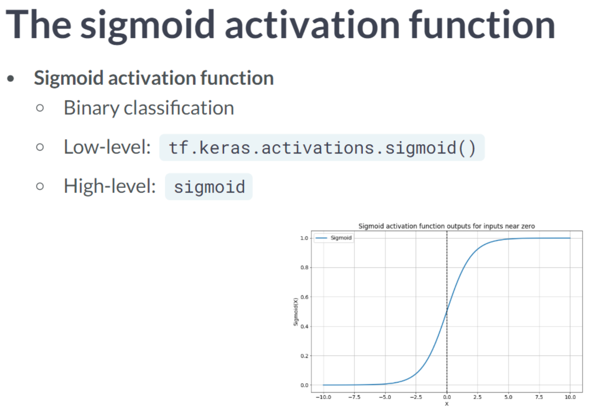 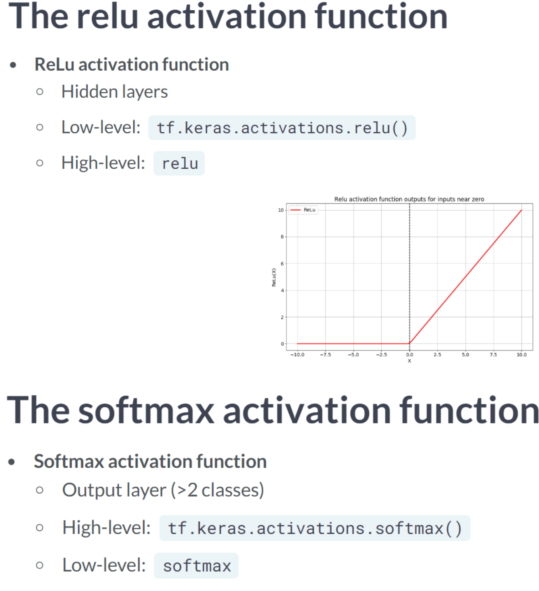 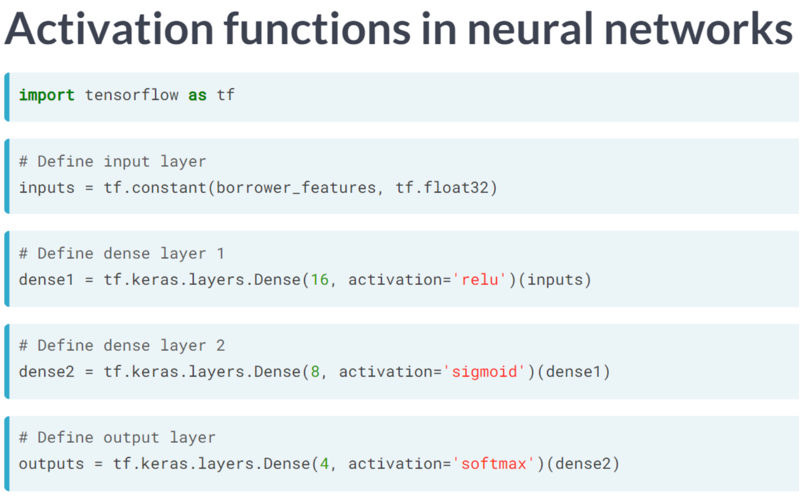
Once again, you will be using credit card data in this exercise. Credit card holders are required to report whether they have defaulted on their payments in the following period using the target variable, default. Because there are only two options-default or not-this is a binary classification problem. Despite the fact that the dataset has many features, you will focus on just three: the size of the three most recent credit card bills. As a final step, you will compute predictions from the outputs of your untrained network and compare them with the default variable.
# Construct input layer from features
inputs = tf.constant(bill_amounts)
# Define first dense layer
dense1 = tf.keras.layers.Dense(3, activation='relu')(inputs)
# Define second dense layer
dense2 = tf.keras.layers.Dense(2,activation='relu')(dense1)
# Define output layer
outputs = tf.keras.layers.Dense(1,activation='sigmoid')(dense2)
# Print error for first five examples
error = default[:5] - outputs.numpy()[:5]
print(error)
print("\nIf you run the code several times, you'll notice that the errors change each time. This is because you're using an untrained model with randomly initialized parameters. Furthermore, the errors fall on the interval between -1 and 1 because default is a binary variable that takes on values of 0 and 1 and outputs is a probability between 0 and 1.")[[1.]
[1.]
[0.]
[0.]
[0.]]
If you run the code several times, you'll notice that the errors change each time. This is because you're using an untrained model with randomly initialized parameters. Furthermore, the errors fall on the interval between -1 and 1 because default is a binary variable that takes on values of 0 and 1 and outputs is a probability between 0 and 1.In this exercise, we expand our focus beyond binary classification to include multiclass problems. Targets in a multiclass problem can take on three or more values. The education variable in the credit card dataset can take on six different values, each representing a different level of education. In this exercise, we will use that target as well as expand the feature set from three to ten columns.
In the same manner as the previous problem, you will define an input layer, dense layers, and an output layer. Moreover, you will print the untrained model’s predictions, which are probabilities assigned to each class.
inputs = tf.constant(borrower_features, tf.float32)
# Define first dense layer
dense1 = tf.keras.layers.Dense(10, activation='sigmoid')(inputs)
# Define second dense layer
dense2 = tf.keras.layers.Dense(8, activation='relu')(dense1)
# Define output layer
outputs = tf.keras.layers.Dense(6, activation='softmax')(dense2)
# Print first five predictions
print(outputs.numpy()[:3])
print("\nNotice that each row of outputs sums to one. This is because a row contains the predicted class probabilities for one example. As with the previous exercise, our predictions are not yet informative, since we are using an untrained model with randomly initialized parameters. This is why the model tends to assign similar probabilities to each class.")[[0.14691362 0.04472108 0.01590052 0.258833 0.01961379 0.51401806]
[0.14691362 0.04472108 0.01590052 0.258833 0.01961379 0.51401806]
[0.14691362 0.04472108 0.01590052 0.258833 0.01961379 0.51401806]]
Notice that each row of outputs sums to one. This is because a row contains the predicted class probabilities for one example. As with the previous exercise, our predictions are not yet informative, since we are using an untrained model with randomly initialized parameters. This is why the model tends to assign similar probabilities to each class.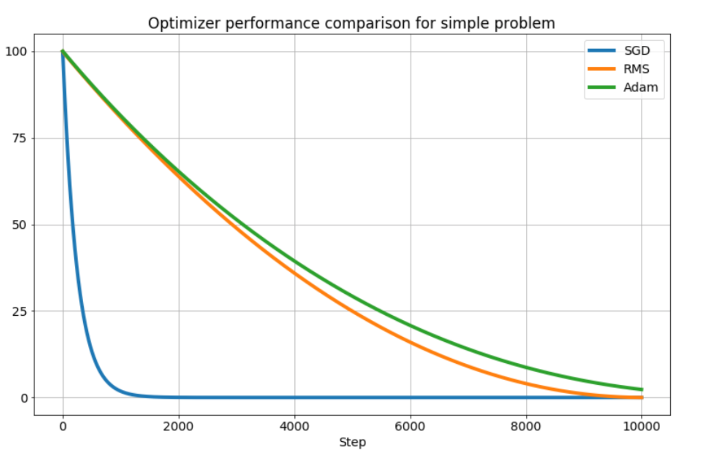
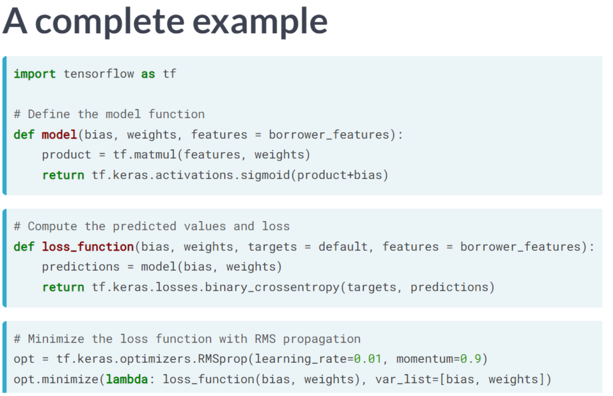
Consider the plot of the following loss function, loss_function(), which contains a global minimum, marked by the dot on the right, and several local minima, including the one marked by the dot on the left.
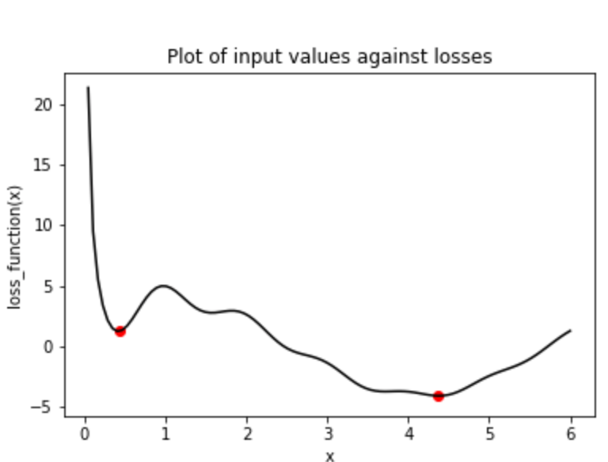
The graph is of a single variable function that contains multiple local minima and a global minimum. In this exercise, you will try to find the global minimum of loss_function() using keras.optimizers.SGD(). You will do this twice, each time with a different initial value of the input to loss_function(). First, you will use x_1, which is a variable with an initial value of 6.0. Second, you will use x_2, which is a variable with an initial value of 0.3. Note that loss_function() has been defined and is available.
# Initialize x_1 and x_2
x_1 = tf.Variable(6.0,tf.float32)
x_2 = tf.Variable(0.3,tf.float32)
# Define the optimization operation
opt = tf.keras.optimizers.legacy.SGD(learning_rate=0.01)
for j in range(100):
# Perform minimization using the loss function and x_1
opt.minimize(lambda: loss_function(x_1), var_list=[x_1])
# Perform minimization using the loss function and x_2
opt.minimize(lambda: loss_function(x_2), var_list=[x_2])
# Print x_1 and x_2 as numpy arrays
print(x_1.numpy(), x_2.numpy())
print("\nNotice that we used the same optimizer and loss function, but two different initial values. When we started at 6.0 with x_1, we found the global minimum at 6.03(?), marked by the dot on the right. When we started at 0.3, we stopped around 0.25 with x_2, the local minimum marked by a dot on the far left.")6.027515 0.25
Notice that we used the same optimizer and loss function, but two different initial values. When we started at 6.0 with x_1, we found the global minimum at 6.03(?), marked by the dot on the right. When we started at 0.3, we stopped around 0.25 with x_2, the local minimum marked by a dot on the far left.The previous problem showed how easy it is to get stuck in local minima. We had a simple optimization problem in one variable and gradient descent still failed to deliver the global minimum when we had to travel through local minima first. One way to avoid this problem is to use momentum, which allows the optimizer to break through local minima. We will again use the loss function from the previous problem, which has been defined and is available for you as loss_function().
Several optimizers in tensorflow have a momentum parameter, including SGD and RMSprop. You will make use of RMSprop in this exercise. Note that x_1 and x_2 have been initialized to the same value this time.
x_1 = tf.Variable(0.05, tf.float32)
x_2 = tf.Variable(0.05, tf.float32)
# Define the optimization operation for opt_1 and opt_2
opt_1 = tf.keras.optimizers.RMSprop(learning_rate=0.01, momentum=0.99)
opt_2 = tf.keras.optimizers.RMSprop(learning_rate=0.01, momentum=0.00)
for j in range(100):
opt_1.minimize(lambda: loss_function(x_1), var_list=[x_1])
# Define the minimization operation for opt_2
opt_2.minimize(lambda: loss_function(x_2), var_list=[x_2])
# Print x_1 and x_2 as numpy arrays
print(x_1.numpy(), x_2.numpy())
print("\nRecall that the global minimum is approximately 4.38. Notice that opt_1 built momentum, bringing x_1 closer to the global minimum. To the contrary, opt_2, which had a momentum parameter of 0.0, got stuck in the local minimum on the left.")WARNING:absl:At this time, the v2.11+ optimizer `tf.keras.optimizers.RMSprop` runs slowly on M1/M2 Macs, please use the legacy Keras optimizer instead, located at `tf.keras.optimizers.legacy.RMSprop`.
WARNING:absl:At this time, the v2.11+ optimizer `tf.keras.optimizers.RMSprop` runs slowly on M1/M2 Macs, please use the legacy Keras optimizer instead, located at `tf.keras.optimizers.legacy.RMSprop`.2.7445128 0.24999999
Recall that the global minimum is approximately 4.38. Notice that opt_1 built momentum, bringing x_1 closer to the global minimum. To the contrary, opt_2, which had a momentum parameter of 0.0, got stuck in the local minimum on the left.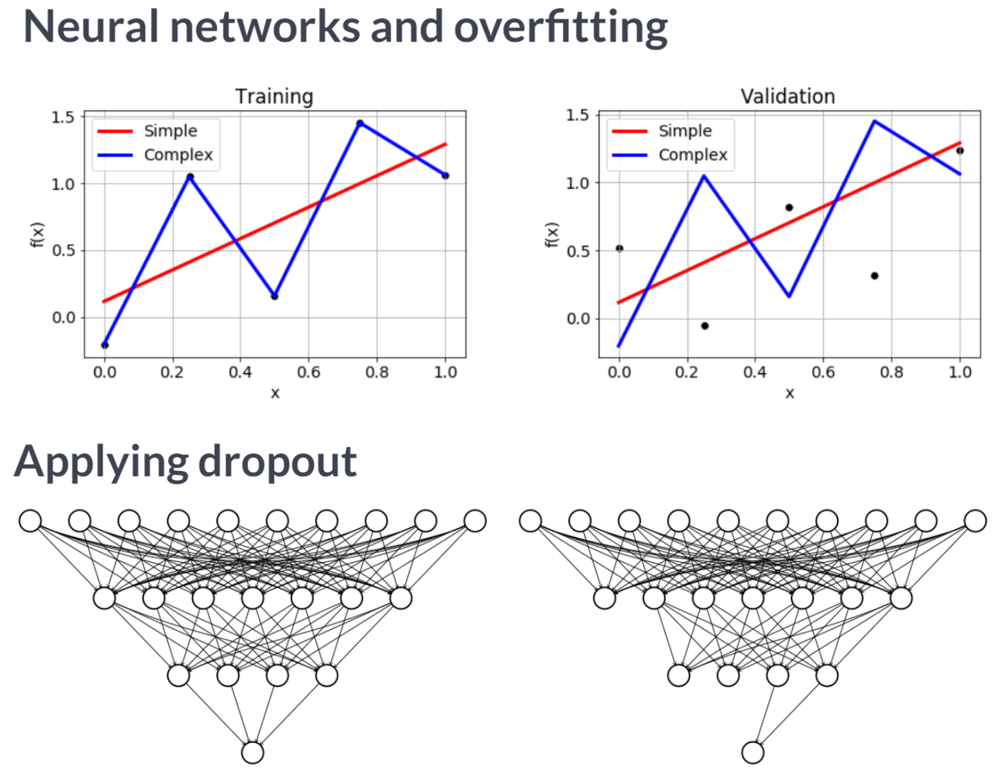
A good initialization can reduce the amount of time needed to find the global minimum. In this exercise, we will initialize weights and biases for a neural network that will be used to predict credit card default decisions. To build intuition, we will use the low-level, linear algebraic approach, rather than making use of convenience functions and high-level keras operations. We will also expand the set of input features from 3 to 23. Several operations have been imported from tensorflow: Variable(), random(), and ones().
In this exercise, you will train a neural network to predict whether a credit card holder will default. The features and targets you will use to train your network are available in the Python shell as borrower_features and default. You defined the weights and biases in the previous exercise.
Note that the predictions layer is defined as σ ( layer1 × w 2 + b 2 ) σ(layer1×w2+b2), where σ σ is the sigmoid activation, layer1 is a tensor of nodes for the first hidden dense layer, w2 is a tensor of weights, and b2 is the bias tensor.
def model(w1, b1, w2, b2, features=borrower_features):
# Apply relu activation function to layer 1
layer1 = tf.keras.activations.relu(tf.matmul(features, w1) + b1)
# Apply Dropout
dropout = tf.keras.layers.Dropout(0.25)(layer1)
return tf.keras.activations.sigmoid(tf.matmul(dropout, w2) + b2)
# Define the loss function
def loss_function(w1, b1, w2, b2, features=borrower_features, targets = borrower_targets):
predictions = model(w1, b1, w2, b2)
# Pass targets and predictions to the cross entropy loss
return tf.keras.losses.binary_crossentropy(targets, predictions)
print("\nOne of the benefits of using tensorflow is that you have the option to customize models down to the linear algebraic-level, as we’ve shown in the last two exercises. If you print w1, you can see that the objects we’re working with are simply tensors.")
One of the benefits of using tensorflow is that you have the option to customize models down to the linear algebraic-level, as we’ve shown in the last two exercises. If you print w1, you can see that the objects we’re working with are simply tensors.<tf.Variable 'Variable:0' shape=(23, 7) dtype=float32, numpy=
array([[ 1.1639808 , -0.76576465, 0.48124003, -1.859154 , -1.0521691 ,
-0.8354042 , -0.15755163],
[ 1.6596911 , 0.6135743 , 0.77285516, -0.3040103 , 1.735466 ,
1.7368596 , 0.59863657],
[-0.93239135, -0.6647375 , 0.5434791 , 2.0024018 , -0.8439101 ,
-1.1818857 , 0.5300017 ],
[-0.24274664, 1.8572452 , -1.0088898 , 0.43908867, -1.2379055 ,
-1.4387907 , -0.34079003],
[ 1.0318589 , 1.4935149 , -3.1576755 , -0.18460831, -1.2581863 ,
3.052062 , -1.1122911 ],
[ 0.44684592, 1.1311083 , 0.15471801, 0.40750188, 1.0943906 ,
-0.34575862, -0.05154627],
[ 0.9441309 , -0.5554715 , 0.44029504, -0.00614071, 1.1193478 ,
0.21717237, -0.45828432],
[ 1.4215152 , 1.0954254 , -1.1918483 , 1.0541608 , 0.39610794,
-0.61516416, 0.74277145],
[ 1.8624239 , -1.449293 , 0.4741258 , 2.2360647 , 0.22330725,
2.157075 , -0.44552845],
[-0.7313468 , 0.0658932 , -1.3808541 , -0.28296164, 0.6895575 ,
-0.69632983, -0.3841717 ],
[-0.41341954, -0.6158271 , 0.2725666 , 2.42598 , -0.65243536,
0.64557534, -1.7109195 ],
[-0.6533758 , -0.07435726, 0.6059658 , 1.3333315 , 1.4684299 ,
-0.21053128, 0.4263164 ],
[ 0.6538532 , 0.3950519 , -0.45688558, 0.34519157, -0.75851196,
0.17585793, -0.0619329 ],
[ 0.77758336, 0.01720417, -1.1464761 , -0.70273983, -0.2945141 ,
-1.1313845 , -1.9618433 ],
[-0.45036328, 0.11100251, -0.33892068, -0.49087837, 0.747899 ,
-1.4014518 , -0.49302182],
[-0.10563198, -1.0649927 , 0.68031025, 0.0452579 , -0.64338654,
0.80657995, 0.03608212],
[-0.76319927, 0.30218953, 0.21402945, 1.0699953 , -0.99121743,
0.49944514, -0.00657209],
[-1.216279 , -0.04164091, -0.7802102 , -0.1828356 , -0.9643596 ,
1.5953912 , -0.14721423],
[-1.66747 , -1.1905165 , 0.08854085, -0.5304906 , 0.24398321,
0.32049677, 1.4409333 ],
[-0.8565525 , 0.71799135, -0.67012763, 1.0996639 , -1.4881973 ,
-0.60127157, -0.93313104],
[-1.2825209 , -0.5696349 , -0.7473839 , 0.15653633, -0.96989083,
-0.91709584, 2.0299273 ],
[-0.69148177, -0.62815505, 1.6360242 , 1.1445189 , 0.14235714,
-0.7732956 , 0.7144049 ],
[-0.38279054, 1.035428 , -1.2345566 , 1.6079584 , 1.2667733 ,
1.1353289 , 0.16424793]], dtype=float32)>In the previous exercise, you defined a model, model(w1, b1, w2, b2, features), and a loss function, loss_function(w1, b1, w2, b2, features, targets), both of which are available to you in this exercise. You will now train the model and then evaluate its performance by predicting default outcomes in a test set, which consists of test_features and test_targets and is available to you. The trainable variables are w1, b1, w2, and b2.
from sklearn.metrics import confusion_matrix
# Train the model
for j in range(1000):
# Complete the optimizer
opt.minimize(lambda: loss_function(w1, b1, w2, b2), var_list=[w1, b1, w2, b2])
# Make predictions with model
model_predictions = model(w1, b1, w2, b2, test_features)
# Construct the confusion matrix
confusion_matrix(test_targets.reshape(-1, 1), model_predictions)ValueError: `logits` and `labels` must have the same shape, received ((2250, 1) vs (2250,)).import seaborn as sns
def confusion_matrix_plot(default, model_predictions):
df = pd.DataFrame(np.hstack([default, model_predictions.numpy() > 0.5]),
columns = ['Actual','Predicted'])
confusion_matrix = pd.crosstab(df['Actual'], df['Predicted'],
rownames=['Actual'], colnames=['Predicted'])
sns.heatmap(confusion_matrix, cmap="Greys", fmt="d", annot=True, cbar=False)